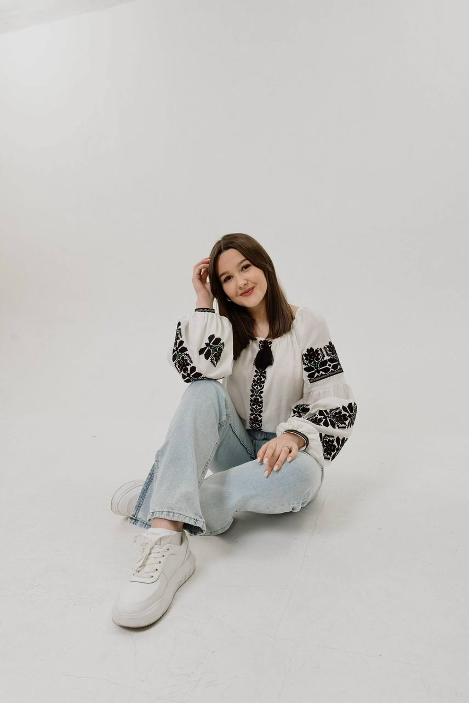

Мене звати Вікторія.Народилася я 3 березня 2005 року у файному місті Тернопіль. Зараз я проживаю у Львові самостійно. У мене невелика сім‘я - мама Ольга, тато Богдан, сестра Єви та брати наші молодші - Бетті й Томчик. Навчаюся я у Львівському національному університеті імені Івана Франка. Обожнюю це місце та факультет міжнародних відносин, який я обрала. Ще зі шкільних років моїм улюбленим предметом була історія України. Я обожнюю вивчати іноземні мови та занурюватися у зовнішню політику держав, тому вибір майбутньої професії був для мене зовсім не складним. За характером я спокійна. Люблю подумати та помріяти без зайвого клопоту. Не люблю робити щось задля "показухи”, поспішати, метушитися. Я – людина не замкнута, я відкрита для людей. Мені подобається бути в колективі, спілкуватися з людьми. Я легко знайомлюся з новими людьми, до них придивляюсь, намагаюся щось почерпнути для себе.
